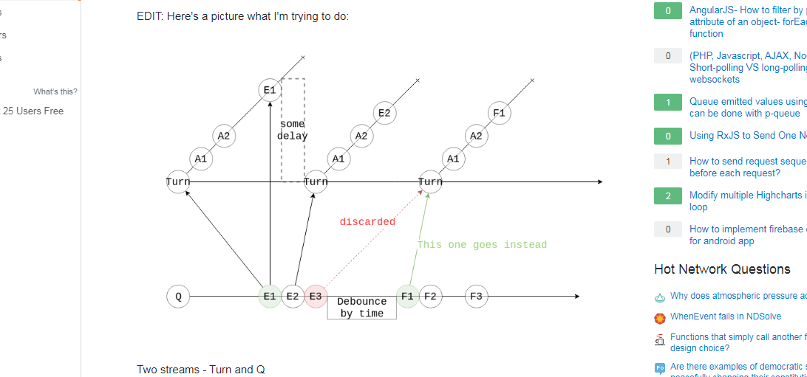
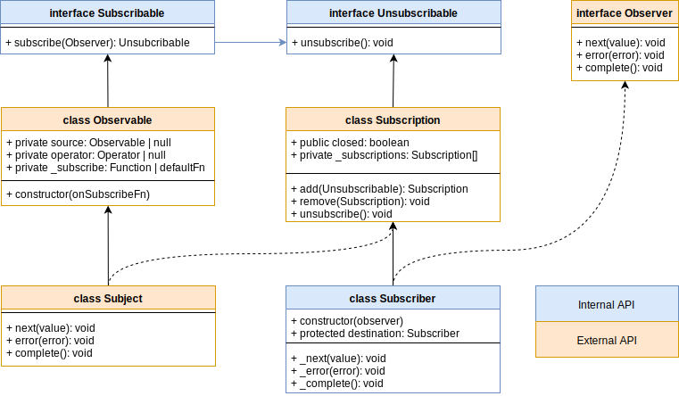
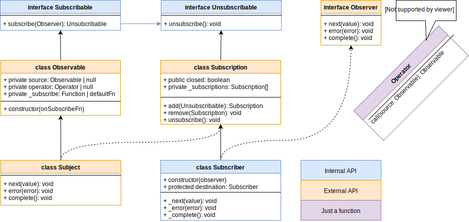
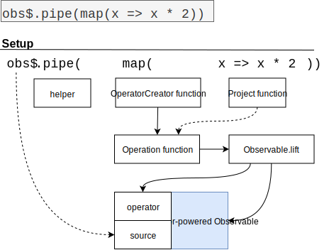
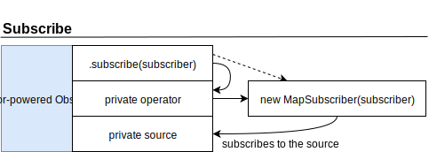
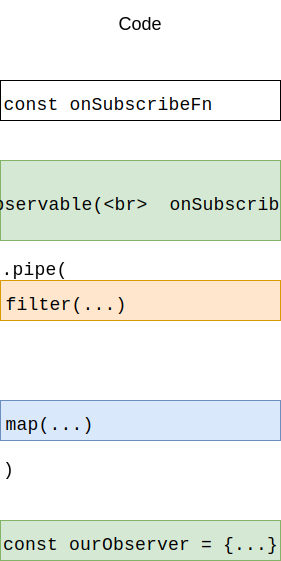
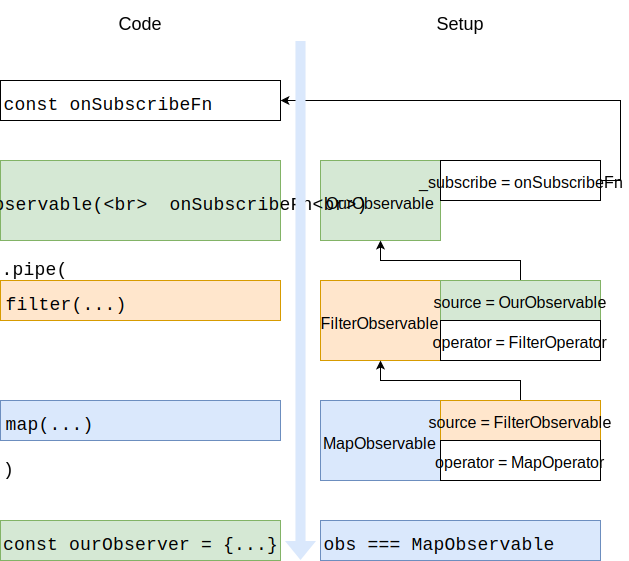
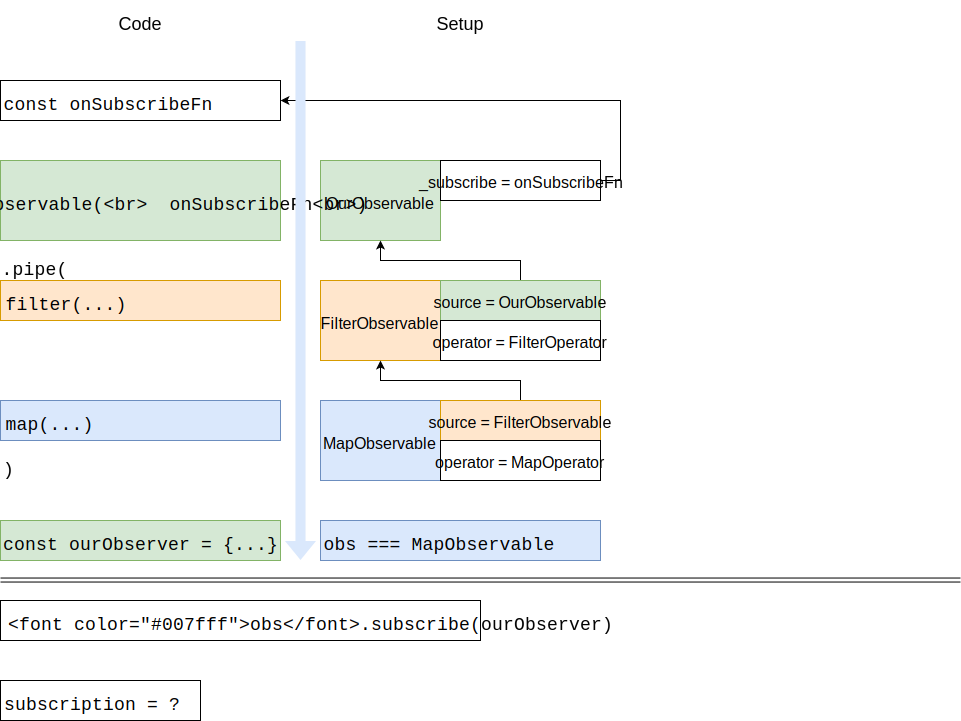
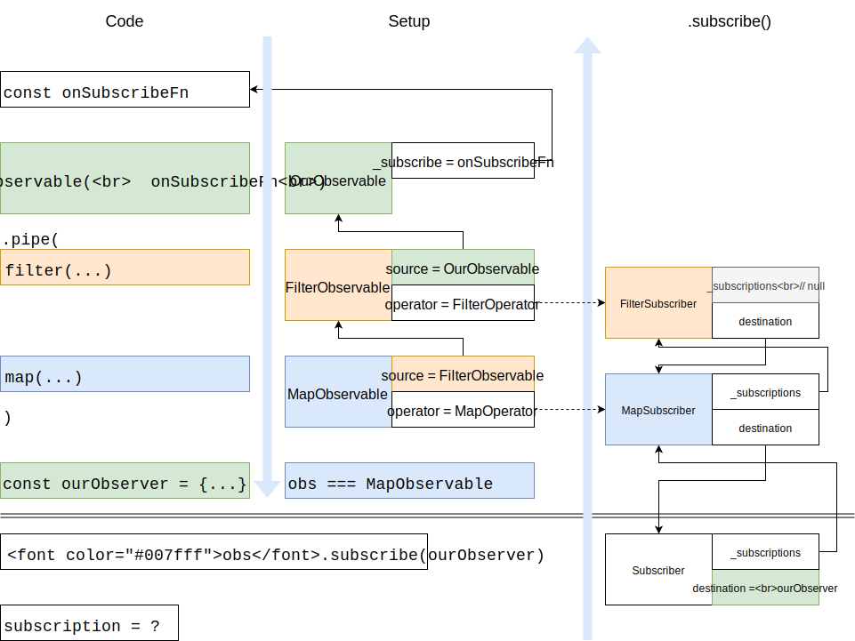
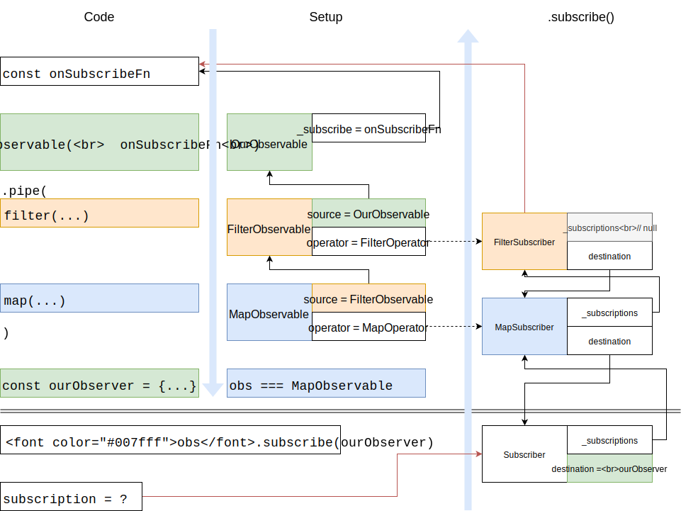

Anatomy of RxJS
My story
- RxJava was cool

- AngularJS / React doesn't have RxJS
- Pet-projects

Introductions
- .maps and .subscribes are fun!
- .takeUntil is less fun:
someDataStream$.pipe( takeUntil(componentUnmount$), merge(Rx.fromEvent(...), Rx.fromEvent(...)) ) - reading this is not fun at all:
Maps each source value to the given Observable innerObservable regardless of the source value, and then flattens those resulting Observables into one single Observable, which is the output Observable. The output Observables emits values only from the most recently emitted instance of innerObservable.© .switchMapTo API documentation
.take(0)
- a) subscribes/completes/unsubscribes
- b) never emits, never completes
- c) doesn't even subscribe, just completes
.take source code
function take(count) {
return (source: Observable) => {
if (count === 0) {
return empty();
} else {
return source.lift(new TakeOperator(count));
}
};
}class TakeOperator implements Operator {
...
call(subscriber: Subscriber, source: Observable) {
return source.subscribe(new TakeSubscriber(subscriber, this.total));
}
} class TakeSubscriber extends Subscriber {
protected _next(value: T): void {
...
if (count <= total) {
this.destination.next(value);
if (count === total) {
this.destination.complete();
this.unsubscribe();
}
}
}
} Really small intro
Observable -> cool value, nice value, happy value -> Observer
const observable$ = new Observable(subscriber => {
subscriber.next(1);
subscriber.complete();
})
observable$.subscribe(someObserver);Observer is an interface
RxJS class diagram
RxJS class diagram v2
RxJS class diagram
- There're 4 main types: Observable, Subscription, Subscriber and Subject
- Observable is the simplest one - just a container for subscription logic
- Subscription is an object with state and it can hold other Subscriptions
- Subscriber is the core class of RxJS, it does all the job
- Subscriber = Subscription + Observer
- Subject is not Observable + Observer, but rather Observable + Subscriber
Simple example
//step 1const doOnUnsubscribeCallback = () => console.log(`I was unsubscribed`);
const doOnSubscribeCallback = (subscriber) => {
console.log(`Help me, I was subscribed`);
subscriber.next(1);
subscriber.complete();
return doOnUnsubscribeCallback;
}// step 2const observable$ = new Rx.Observable(doOnSubscribeCallback);//observable$ = {
// _subscribe: doOnSubscribeCallback
//}// step 3observable$.subscribe(makeObserver('John'));Simple subscribe
observable$.subscribe(johnTheObserver) {
const johnTheSubscriber = convertWhateverWePassIntoSubscriber(johnTheObserver)
const subscriber = new Subscriber(johnTheSubscriber)
if (this.operator) { // this === observable$ subscriber.add(operator.call(subscriber, this.source)); } else { subscriber.add(this._subscribe(subscriber)); }
return subscriber;
}What that means
- Observable is either just holding our callback or it is some kind of "operator-powered Observable"
- Depending on that it changes behavior when subscribing
- When we subscribe, we convert our Observer to Subscriber, adding state and giving ability to manage subscriptions
- when we subscribe we get whole subscriber
// Don't try this at home! const obs$ = new Rx.Observable((subscriber) => {}); const subscription = obs$ .subscribe((value) => console.log(`next(${value})`)); subscription.next('hack'); // outputs next(hack);
Operators

Operators are:
- OperatorCreator functions:
(project) => Operation - Operation functions:
(source: Observable) => Observable - Operators itself:
(subscriber, source: Observable) =>
source.subscribe(new Subscriber(subscriber))
Brace yourself
Subscribe with operators
Yay!
- Observables are chained through the .source field up to the onSubscribe callback
- .subscribe creates chain of Subscribers
- It's up to every Subscriber in the chain whether to call next of the destination Subscriber
- But every destination Subscriber holds his upstream brothers in it's subscription list to consistently unsubscribe.
Conclusion
Now you can:
- Debug via looking inside Observables and stuff
- Look into Rx.operators source code without fear
- Write your own Operators with their own Subscribers
- Keep sanity while reading docs
Thanks! You can find this presentation at http://ivan-work.github.io/prxjs
sources:
- https://github.com/ReactiveX/rxjs/tree/6.x
- https://rxjs-dev.firebaseapp.com/
- [ru] https://www.youtube.com/watch?v=7806msvJ1HE - Cool presentation about memory leaks
- https://medium.com/angular-in-depth